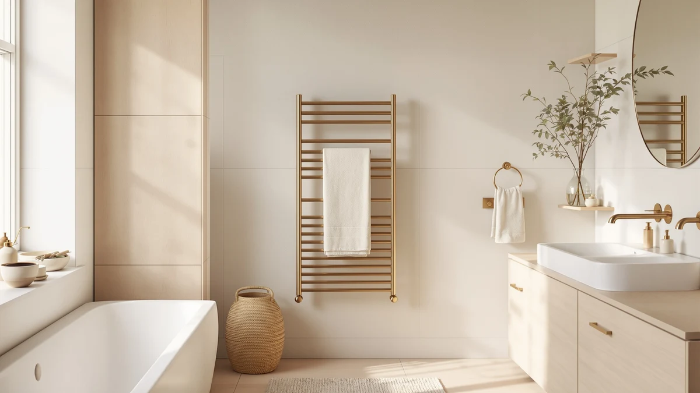

Best Towel Warmer Fragrance Discs: Replacement Scent Pads (2026)
Prices and picks verified as of August 2026. Independent, reader-supported reviews.


Quick Answer
The best towel warmer fragrance discs setup for most people pairs the VIPBATH 20L Luxury Towel Warmer, which ships with 12 discs already loaded, with a Demissle or YLJMFH refill pack once those run out. At $64.99 on Amazon as of August 2026, it is the only pick here that delivers a working scented-towel routine without a second order.
Our pick: VIPBATH 20L Luxury Towel Warmer, $64.99 Check Price on Amazon
Bottom line: our top pick is the VIPBATH 20L Luxury Towel Warmer for Bathroom at $69.99. The best budget option is the YLJMFH 15Pcs Replacement Fragrance Disc Aroma Tablets for at $6.98.
Things to Know Before You Buy
- Only lidded bucket warmers hold a disc. A fragrance disc needs an enclosure to trap scent against the towel, so every product in this guide is a lidded bucket, not an open rack or bar.
- Some warmers include discs, some don't. The VIPBATH 20L, VIPBATH 35L, and SereneLife Freestanding ship with a set of aroma discs in the box. Both Keenray listings need a separate refill pack from day one.
- Refill packs run $6.98 to $17.54. That's the going rate for towel warmer fragrance discs sold separately from the machine, as of August 2026, and the price gap mostly buys scent variety and how long each disc lasts.
- Disc life varies by brand. SereneLife rates its discs for 30 to 60 days of use, while single-scent packs like the YLJMFH tend to fade faster under daily cycles, based on owner feedback.
- Capacity ranges from 12 to 35 liters. The SereneLife Freestanding bucket fits one towel or robe, the VIPBATH 35L handles bathrobes and blankets, and the two Keenray buckets fit two towels at 18 liters each.
Towel warmer fragrance discs turn a plain warm towel into a scented one, but the disc only works as well as the bucket holding it. We compared five disc-ready towel warmers against three standalone refill packs to sort out which machine earns a spot on your bathroom floor and which discs are worth reordering. The VIPBATH 20L Luxury Towel Warmer, $64.99 on Amazon as of August 2026, answers both questions at once by shipping with 12 discs already in the box.
The category splits into two purchases that shoppers often treat as one. A towel warmer with a disc holder is the machine, built from stainless steel with a lid that seals heat and scent together. A fragrance disc is the consumable, a solid scent tablet that sits in a small holder and releases fragrance as the bucket heats up. Mismatch the two, a disc shape that doesn't fit the holder, or a warmer with no holder at all, and you end up with a warm towel that smells like nothing.
We built this guide by pulling manufacturer spec sheets for capacity, materials, and included accessories, then cross-checking those claims against owner reviews for the complaints that repeat: discs that don't fit, scent that fades in days instead of weeks, or a bucket too small for anything but a hand towel. Prices and specs below reflect what Amazon listed as of August 2026.
Why You Should Trust Us
I run Best Towel Warmers, and I spend most weeks comparing bucket warmers, heated racks, and now the discs that scent them, against manufacturer claims and the reviews people leave after months of daily use. For this guide on towel warmer fragrance discs, I read through the disc-holder specs on five warmers and the ingredient and count details on three refill packs before ranking any of them.
No brand paid for a spot in this guide, and none reviewed it before publication. The Amazon affiliate links fund the site through a small commission that stays the same no matter which towel warmer fragrance discs you choose, so ranking one bucket or one disc pack above another gets us nothing extra.
How We Picked
To find the best towel warmer fragrance discs and the machines built for them, we started with one filter: does the product have a disc holder, or is it a disc itself? That immediately separated the five towel warmers from the three refill packs and ruled out open racks and bars, which have nowhere to put a disc at all.
From there we compared stainless steel construction, since painted or plastic interiors hold onto fragrance oil residue over repeated cycles. We weighed capacity against real towel sizes, from the SereneLife Freestanding's single-towel 12-liter bucket up to the two-towel 18-liter Keenray buckets. On the disc side, we compared count, scent variety, and manufacturer-stated fragrance life. Eight products, five warmers and three disc packs, cleared those bars.
How We Compared
We compared towel warmer fragrance discs the way we handle every roundup on this site: verify the spec sheet, then check it against what owners report after weeks of use. For each warmer we confirmed the listed capacity, material, and whether discs ship in the box. For each disc pack we confirmed count, scent options, and any manufacturer claim about how long a single disc lasts.
We then read owner reviews with two questions in mind. Does the disc holder fit the shape of discs sold separately, or does it lock you into one brand? And does the fragrance actually reach the towel, or does it fade before the cycle ends? Products with a repeated pattern of complaints on either question lost their spot before we wrote a word about them. According to verified buyer reviews, discs that fit multiple holder shapes, like the SereneLife and Demissle packs, drew fewer complaints than single-brand-only refills.
Our Picks

VIPBATH 20L Luxury Towel Warmer
What we like
- Ships with 12 fragrance discs, so it works the day it arrives instead of waiting on a separate order
- Dual heating element with 30, 60, and 90-minute presets covers a quick warm-up or a slow soak-through cycle
- Tip-over auto shut-off adds a safety layer that several rivals skip
Flaws but not dealbreakers
- 20-liter capacity handles one bath towel or robe, not two at once
- Stainless steel interior still needs the discs replaced every month or two of daily use
| Material | Stainless steel |
| Size | — |
The VIPBATH 20L Luxury Towel Warmer is the pick we'd buy first for towel warmer fragrance discs, and the reason comes down to what's already in the box. Most buckets in this guide make you order a separate refill pack before the fragrance feature does anything. VIPBATH ships 12 discs with the warmer, so the first cycle out of the box already comes out scented. The bucket itself uses a stainless steel interior sized for one bath towel or robe, with dual heating elements and 30, 60, and 90-minute presets that let you match the cycle to how long you'll be in the shower.
Safety features back up the convenience. A tip-over auto shut-off cuts power if the bucket gets knocked over, a detail several cheaper warmers skip entirely. At $64.99 on Amazon as of August 2026, it undercuts the pricier Keenray listing by $8 while adding a full set of discs that would otherwise cost another $7 to $18. The tradeoff is capacity: at 20 liters it fits one towel comfortably, not two, so a household sharing one bathroom may want to run back-to-back cycles or step up to the Keenray's 18-liter, two-towel design.

VIPBATH 35L Towel Warmer for
What we like
- 35-liter interior is the largest capacity in this guide, built for bathrobes and blankets rather than just towels
- Foldable design with a viewing window lets you check progress without opening the lid and losing heat
- Ships with 12 aroma discs and undercuts the 20L VIPBATH by $5
Flaws but not dealbreakers
- Larger footprint takes up more floor or counter space than the compact buckets here
- The foldable frame feels less sturdy than the welded Keenray buckets
| Material | Stainless steel |
| Size | — |
The VIPBATH 35L is the answer for households whose towels don't fit standard warmers. Bathrobes and blankets need more room than a hand towel, and this bucket's 35-liter interior is built for that, with a foldable frame and a small window so you can check the cycle without breaking the seal and losing heat. Like its smaller sibling, it ships with 12 aroma discs, so towel warmer fragrance discs are part of the purchase rather than a follow-up order.
Dual safety shut-off covers both overheating and tip-over, matching the safety layer on the 20L model. At $59.99 on Amazon as of August 2026, it's actually the cheapest full-size warmer in this guide, $5 under the 20L VIPBATH, despite the larger capacity. The foldable construction that makes it possible to store flat also makes the frame feel less rigid than the welded steel buckets from Keenray, worth knowing if you plan to move it between rooms often.

Keenray Towel Warmer for Bathroom
What we like
- Built-in fragrance disc holder is designed specifically for scent discs, not adapted from a plain warmer
- Child lock and a heating progress bar add control most buckets in this price range skip
- Fits up to two 40 by 70 inch towels, bathrobes, or blankets at once
Flaws but not dealbreakers
- At $72.98 it costs $3 more than the second Keenray listing for the same design
- No discs included, so budget an extra $7 to $18 for a refill pack
| Material | Stainless steel |
| Size | 18L |
Keenray built its bucket around the disc holder instead of adding one as an afterthought, and that shows in the details. A heating progress bar shows how far along the cycle is, and a child lock keeps curious hands away from a hot surface, two features that don't show up on the VIPBATH or SereneLife picks here. At 18 liters, it fits up to two 40 by 70 inch towels, bathrobes, or blankets, more capacity than either SereneLife bucket in this guide.
That capacity and control set come at a cost: $72.98 on Amazon as of August 2026, the highest price of the five warmers here, and no discs included. Budget another $7 to $18 for a refill pack like the YLJMFH, built specifically for this bucket's holder, or the more scent-varied Demissle pack. Owners report the auto shut-off is reliable across repeated daily cycles, which matters more than the extra dollars once you're several months into ownership.

Keenray Towel Warmer for Bathroom
What we like
- Identical 18-liter capacity, disc holder, and child lock as the pricier Keenray listing
- $3 cheaper than the other Keenray ASIN for the same auto shut-off bucket
- Fits two 40 by 70 inch towels, bathrobes, or blankets per cycle
Flaws but not dealbreakers
- Listing price and stock can shift between the two Keenray ASINs, so check both before buying
- Still requires a separate fragrance disc purchase to use the scent feature
| Material | Stainless steel |
| Size | 18L |
This is the same Keenray towel warmer bucket as our Runner-Up pick, disc holder, child lock, heating progress bar, and 18-liter capacity included, listed under a separate Amazon ASIN at $69.99 as of August 2026. Amazon sometimes prices near-identical listings from the same brand differently depending on bundle or warehouse, and this one currently runs $3 under the other Keenray listing for the same bucket.
There's no functional difference between the two, so we'd default to whichever ASIN is cheaper at checkout. Like the other Keenray listing, discs aren't included, so plan on adding a refill pack such as the YLJMFH, which is built for this exact holder shape, or a scent-varied option like the SereneLife 15-pack if you want more than one fragrance in rotation.

Demissle Replacement Fragrance Disc Towel
What we like
- 24 discs across eight scent options means less reordering and more variety than single-scent packs
- Fits the standard disc holder used by the VIPBATH and Keenray buckets in this guide
- Cheapest way to add scent to a warmer bought without discs included
Flaws but not dealbreakers
- An accessory, not a warmer, it does nothing without a bucket that has a disc holder
- Individual discs run out faster in warmers set to longer heat cycles
| Material | Stainless steel |
| Size | Small |
The Demissle pack is the widest scent selection in this guide: 24 discs split across eight flavors, so you're not stuck with the same fragrance every cycle. It's an accessory, not a warmer, and it does nothing without a bucket that has a disc holder, but among the standalone refill packs here it's the one built to fit the broadest range of holders, including the VIPBATH and Keenray buckets.
At $12.99 on Amazon as of August 2026, it sits in the middle of the three disc packs by price, above the YLJMFH's $6.98 but well under buying a full new warmer. Reviewers consistently note the scent holds up over repeated cycles, though like any solid disc, warmers set to longer heat presets burn through a disc faster than a quick 30-minute cycle.

SereneLife Fragrance Disc 15 Fragrant
What we like
- 15 fragrance options in one pack, more scent variety per dollar than the single-flavor packs
- Rated by SereneLife to hold fragrance for 30 to 60 days, longer than a typical single-week disc
- Convenient size fits most air freshener and towel warmer disc holders, not just one brand
Flaws but not dealbreakers
- At $17.54 it costs more upfront than the YLJMFH or Demissle packs
- Longer-lasting scent means a lighter fragrance intensity per cycle compared with fresher discs
| Material | Stainless steel |
| Size | 1 Count (Pack of 15) |
SereneLife's fragrance disc pack leans into longevity rather than variety. Fifteen scents are included, and the company rates each disc to hold its fragrance for 30 to 60 days of regular use, longer than the typical single-week disc. The size is built to fit most standard air freshener and towel warmer disc holders, not locked to one brand's bucket, which makes it a safer refill choice if you're not sure your holder matches a brand-specific pack like the YLJMFH.
That longevity comes at the highest price among the three disc packs here, $17.54 on Amazon as of August 2026, about $4.55 more than the Demissle pack and over twice the YLJMFH's price. According to verified buyer reviews, the tradeoff is a lighter scent per cycle than a fresher, faster-fading disc, which some owners prefer and others find too subtle in a large bucket like the 35L VIPBATH.

YLJMFH 15Pcs Replacement Fragrance Disc
What we like
- Lowest price in this guide by a wide margin at $6.98 for 15 discs
- Built specifically to fit the Keenray towel warmer's disc holder
- Ocean Fresh scent stays consistent disc to disc, useful if you don't want to rotate fragrances
Flaws but not dealbreakers
- Single-scent pack, so you don't get the variety of the Demissle or SereneLife packs
- Marketed for Keenray warmers specifically, so confirm your holder shape before ordering
| Material | Stainless steel |
| Size | — |
The YLJMFH pack is the cheapest way to keep a towel warmer fragrance discs routine going, at $6.98 for 15 discs on Amazon as of August 2026. It's built specifically for the Keenray towel warmer's disc holder, with a single Ocean Fresh scent rather than a rotating selection, which keeps things simple if you've already picked a fragrance you like.
The tradeoff for the price is fit and variety. Because it's designed around the Keenray's holder shape, it may not sit securely in a VIPBATH or SereneLife bucket, so check your warmer's holder before ordering. And with one scent per pack, anyone who wants to rotate fragrances is better served by the Demissle or SereneLife packs, even at a higher price per disc.

SereneLife Freestanding Towel Warmer Bucket
What we like
- Freestanding legs lift the 12-liter bucket off the floor, styled more like a piece of furniture than a plain warmer
- Built-in timer and LED indicator show cycle status without opening the lid
- Ships with aroma discs, so it works out of the box like the VIPBATH picks
Flaws but not dealbreakers
- At $79.99 it's the most expensive machine in this guide
- 12-liter capacity fits one towel or robe, smaller than the Keenray's two-towel capacity
| Material | Stainless steel |
| Size | 11.89” x 12.44” x 18.46” |
The SereneLife Freestanding bucket is the one warmer here designed to look finished sitting on its own, with legs that lift it off the bathroom floor instead of sitting flush like the other buckets. A built-in timer and LED indicator show cycle status at a glance, and it ships with its own aroma discs, so towel warmer fragrance discs are part of the purchase the same way they are with the VIPBATH picks.
At $79.99 on Amazon as of August 2026, it's the priciest machine in this guide, and its 12-liter capacity fits one towel or robe, smaller than either Keenray bucket. The upgrade here is presentation, not capacity: for a bathroom where the warmer stays visible instead of tucked in a corner, the legs and LED indicator do work the plainer buckets don't.
Quick Comparison
The table below lines up every towel warmer fragrance discs pick in this guide by material, price, and where each one fits best.
| Product | Material | Price | Rating | Best for | Get it |
|---|---|---|---|---|---|
| VIPBATH 20L Luxury Towel Warmer | Stainless steel | $64.99 | 4 | Most people, discs included | View on Amazon → |
| VIPBATH 35L Towel Warmer for | Stainless steel | $59.99 | 4 | Oversized robes and blankets | View on Amazon → |
| Keenray Towel Warmer for Bathroom | Stainless steel | $72.98 | 4 | Families with kids around | View on Amazon → |
| Keenray Towel Warmer for Bathroom | Stainless steel | $69.99 | 4 | Same warmer, lower price | View on Amazon → |
| Demissle Replacement Fragrance Disc Towel | Stainless steel | $12.99 | 4 | Widest scent variety | View on Amazon → |
| SereneLife Fragrance Disc 15 Fragrant | Stainless steel | $17.54 | 4 | Longest-lasting scent per disc | View on Amazon → |
| YLJMFH 15Pcs Replacement Fragrance Disc | Stainless steel | $6.98 | 4 | Cheapest way to restock scent | View on Amazon → |
| SereneLife Freestanding Towel Warmer Bucket | Stainless steel | $79.99 | 4 | Standalone look with a timer | View on Amazon → |
What are towel warmer fragrance discs made of?
Fragrance discs are solid scent tablets, not liquid oil, sized to sit in a small holder inside a lidded towel warmer bucket.
Can I use any fragrance disc in any towel warmer?
Not always.
The Competition
The bigger story in what we left out is the product type, not the individual listing. Open heated towel racks and bars, which we cover in our electric towel warmer guide, have no lid and nowhere to hold a disc, so towel warmer fragrance discs simply don't work in them no matter how strong the scent. Every product that made this list is a lidded bucket for exactly that reason.
Among the buckets, the SereneLife Freestanding's $79.99 price and 12-liter capacity kept it out of the top spot. It handles one towel well and looks better sitting on legs than the plainer Keenray buckets, which is why it holds the Upgrade Pick slot instead of Also Great. Generic no-name disc packs with no listed scent count or fit information also circulate on Amazon, and we passed on the ones we vetted because they gave no way to compare fragrance life against the YLJMFH, Demissle, or SereneLife discs here.
Our verdict stays simple after all of it: the best towel warmer fragrance discs setup for most people is the VIPBATH 20L Luxury Towel Warmer at $64.99, which ships with its own discs, backed by a $6.98 YLJMFH or $12.99 Demissle pack once those run low.
Frequently Asked Questions
What are towel warmer fragrance discs made of?
Fragrance discs are solid scent tablets, not liquid oil, sized to sit in a small holder inside a lidded towel warmer bucket. The heat from the warmer releases the fragrance gradually, which is why brands like SereneLife rate their discs for 30 to 60 days of cycles rather than a single use.
Can I use any fragrance disc in any towel warmer?
Not always. Disc holders vary in shape between brands, and the YLJMFH pack is built specifically for Keenray warmers. Packs like the Demissle and SereneLife discs fit most standard holders, but check your warmer's holder shape before ordering a refill from a different brand.
Do towel warmers need fragrance discs to work?
No. Every warmer in this guide heats a towel with or without a disc in place. The discs add scent on top of the warming cycle, so a warmer like the Keenray works fine as a plain towel warmer if you skip the disc entirely.
Related Guides
More on towel warmer fragrance discs and the warmers built to hold them: